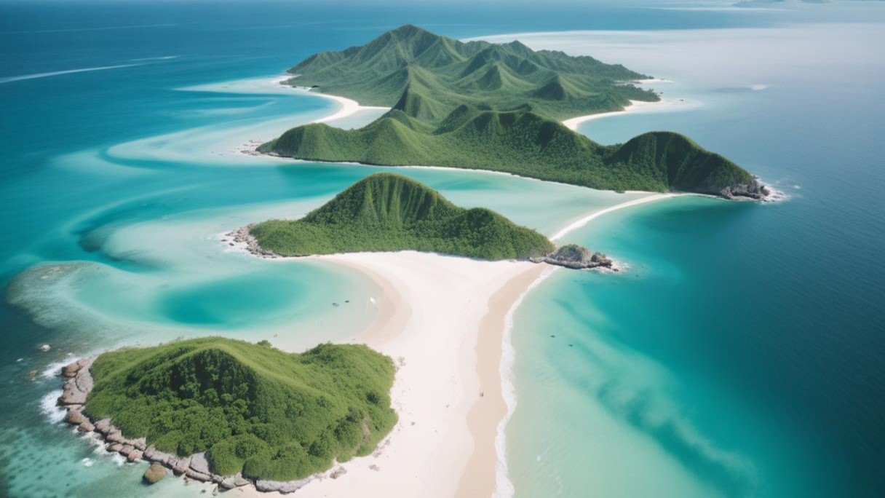

Raja Ampat, terletak di Papua Barat, adalah salah satu destinasi wisata bahari terbaik di dunia. Kepulauan ini terkenal dengan keanekaragaman hayati lautnya yang luar biasa dan pemandangan alam yang menakjubkan.
Raja Ampat

Aktivitas di Raja Ampat
- Menyelam di perairan yang jernih
- Snorkeling untuk melihat terumbu karang yang indah
- Menjelajahi pulau-pulau kecil dengan perahu
- Mendaki untuk menikmati pemandangan dari atas bukit
- Berinteraksi dengan penduduk lokal dan belajar tentang budaya mereka
Informasi Penting
Waktu terbaik untuk mengunjungi Raja Ampat adalah antara Oktober dan April, saat cuaca cenderung lebih tenang. Pastikan untuk membawa perlengkapan menyelam atau snorkeling, dan selalu menjaga kelestarian lingkungan.